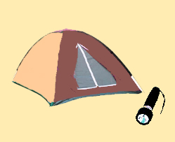

La chasse au dahu de Camargue

interdite
Fiche technique
- Statut
- Interdit — infraction
- Appât
- 3-4 omelettes de 5 œufs
- Équipe
- 4-5 personnes
- Guide
- Indispensable
Avant d'écrire cette page, j'ai pris l'avis d'un avocat, car la chasse du dahu est formellement interdite. Je vous indique donc que c'est une infraction, et que ce que je vous dis raconte la façon de chasser au temps où c'était permis. À vous de voir si vous voulez prendre des risques, ce n'est plus mon affaire...
Pour chasser le dahu, il faut, trois jours avant, confectionner les omelettes : trois ou quatre de cinq œufs chacune (des œufs de poule conviennent très bien). Je rappelle que le dahu de Camargue n'aime pas les omelettes trop fraîches. On met les omelettes dans un sac, on s'équipe bien, on prend de l'eau et une petite tente pour la nuit. On y va toujours à quatre ou cinq pour des raisons de sécurité (prendre un téléphone portable, car il n'y a pas d'autre moyen d'alerte, mais ne pas l'utiliser pour ne pas se faire remarquer par la gendarmerie). Un guide spécialisé est indispensable (je vous en indiquerai si vous le demandez).
Lorsqu'on est dans la zone de chasse, on poste le chasseur principal avec un sac à la limite de l'eau et de la berge, avec une grosse omelette au fond du sac. Les autres chasseurs émiettent les autres omelettes tout autour dans les herbes, et vont se poster discrètement plus loin.
Automatiquement le dahu est attiré (ça peut prendre une bonne heure). On constate que si le chasseur tient bien le sac au sec, le dahu y entre en général les pattes courtes en premier (celles qu'il ne mouille pas en marchant), et si le sac est mouillé, il entre les pattes longues d'abord (celles qu'il met dans l'eau). Quand le dahu est dans le sac, il faut le refermer vite : l'animal n'est pas dangereux, ce n'est pas la peine de l'assommer. En général, on le caresse un peu, et on le relâche. Le tout est ensuite de rentrer discrètement pour ne pas se faire remarquer...
Ceci dit, ça ne marche pas à tous les coups, et j'en ai entendu beaucoup se vanter d'avoir chassé un dahu, et ce qu'ils disaient montrait bien qu'ils ne l'avaient jamais fait... c'est fou les bêtises qu'on a pu entendre à ce sujet !